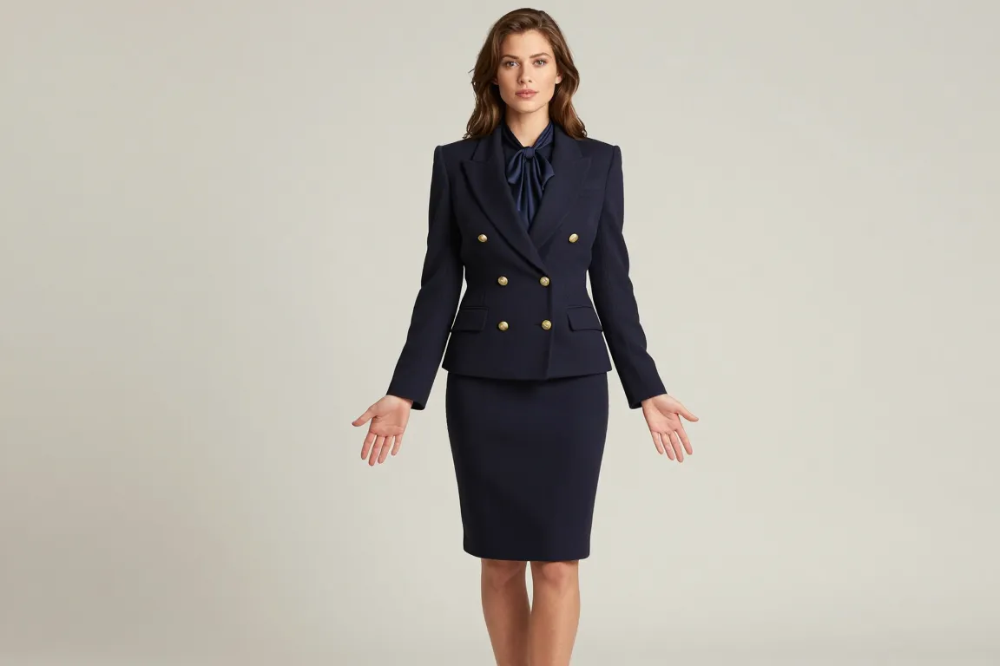

mote · 1980–1990 · også: Power suit, Dress for success, Dress med skulderputer, Kontordrakt fra 1980-årene
Den arbeidende kvinnens dress fra 1980-årene. Den har en skreddersydd jakke med brede polstrede skuldre, et skjørt eller bukser i ull og en silkebluse med sløyfe. Fargen er sterk og enkel.

Kjerneidé
Drakten er en uniform for autoritet. En kvinne på jobb bærer den brede skulderen og den skarpe linjen fra herredressen, og krever dermed samme stilling.
Designprinsipper
Polstre skulderen slik at den måler 2 til 4 cm bredere enn den naturlige skulderlinjen.
Skjær jakken til hoften, med en markert midje eller en rett bokslinje.
Sett skjørtfållen ved kneet, og skjær buksen rett med en legg.
Velg en fin kamgarnsull, gabardin eller crêpe i en enkel farge.
Kombiner jakken med en silkebluse, en sløyfe eller en skjorte, og hold halsen dekket.
Tilpass jakken og skjørtet eller buksen i ett stoff.
Avslutt med en gullknapp, et belte, en enkel pumps og en strukturert veske.